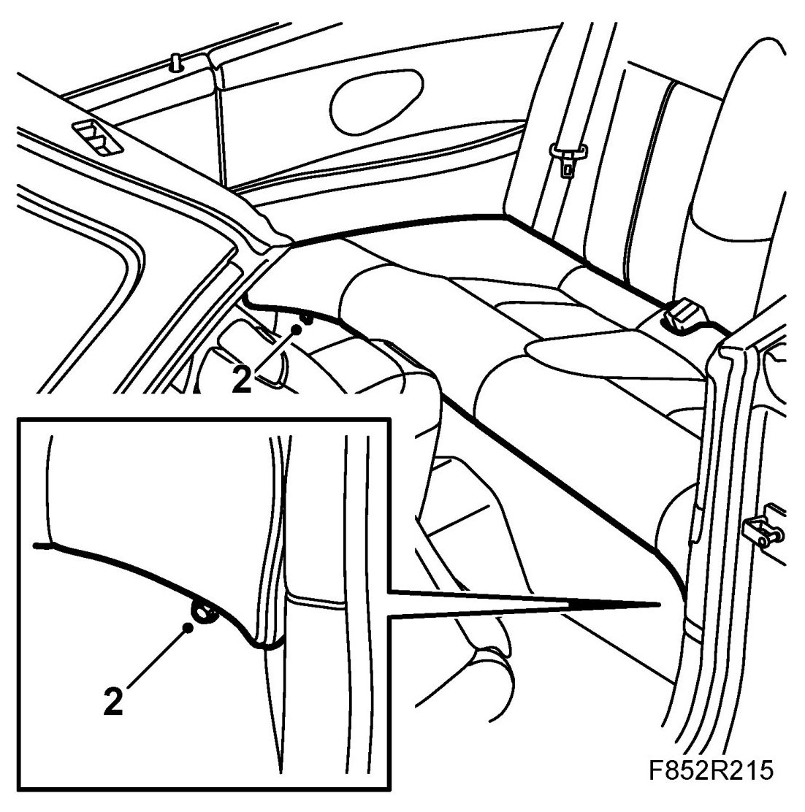

Seat Cushion, Backrest, CV
Seat Cushion, Backrest, CV
To remove
1. Open the hood.
2. Remove the screws from the rear seat cushion.
3. Raise the seat cushion front edge and lift the cushion out.

To fit
1. Position the seat cushion and press down on the fixings in the front edge.
2. Fit the screws to the rear seat cushion.
3. Close the hood.